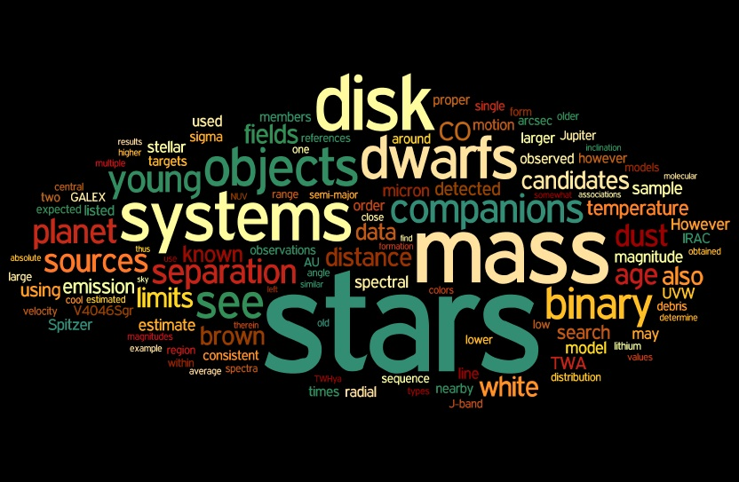

About
I am currently an Astronomical Data Scientist at the Space Telescope Science Institute (STScI) in Baltimore.
Specically, I work at the Mikulski Archive for Space Telescopes (MAST)
to help ensure data from missions like HST, JWST, TESS, and more are easily searchable and science-ready for our users.
Contact Info
David R. Rodriguez
Catalog Science Branch
Space Telescope Science Institute
3700 San Martin Drive
Baltimore, MD 21218
Work

Research
I primarily support missions hosted in the Mikulski Archive for Space Telescopes
(MAST) as part of my work at STScI.
I focus on the consolidation of metadata across our missions utilizing the
Common Archive Observation Model (CAOM).
I also work on a variety of other MAST-related projects, including Exo.MAST,
z.MAST,
and catalogs.mast, among others.
My science interests revolve around nearby young moving groups, low-mass stars and brown dwarfs, and debris disks.
My ORCID ID is  orcid.org/0000-0003-1286-5231.
orcid.org/0000-0003-1286-5231.
For my old research page, see here
Looking for the Easter Island Transit of Venus 2012 page? Click here.
Software Tools
Additional Links
Hobbies
I have several hobbies generally revolving around my interests in science fiction and fantasy,
though my two main ones are probably reading and gaming.
Reading
I read a lot of novels, particularly epic fantasy and science fiction.
You can check out my reading lists at Goodreads
and Bookwyrm.
It's hard to narrow down just a few recent favorites, so feel free to check out my list.
I write book reviews at my blog: Strakul's Thoughts,
where I also sometimes write about astronomy or data science.
Gaming
I play a variety of video games but gravitate towards role-playing (RGPs, also MMORPGs),
city building, colony simulator, and grand strategy games.
Some of my recent favorites include Final Fantasy XIV
(my character is Vir Strakul on Goblin),
Victoria 3, Pathfinder: Wrath of the Righteous, and many more.
For a more complete list, you can see my Steam profile.